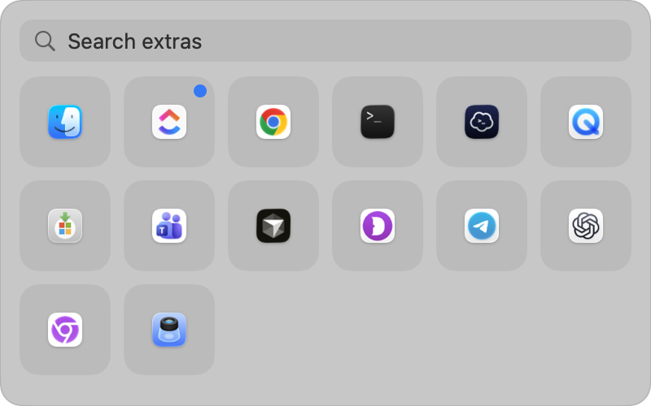
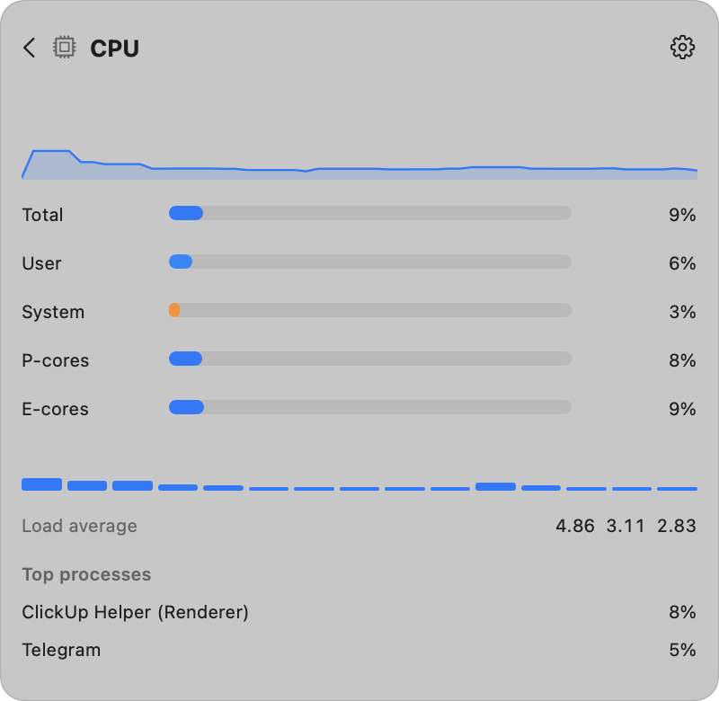
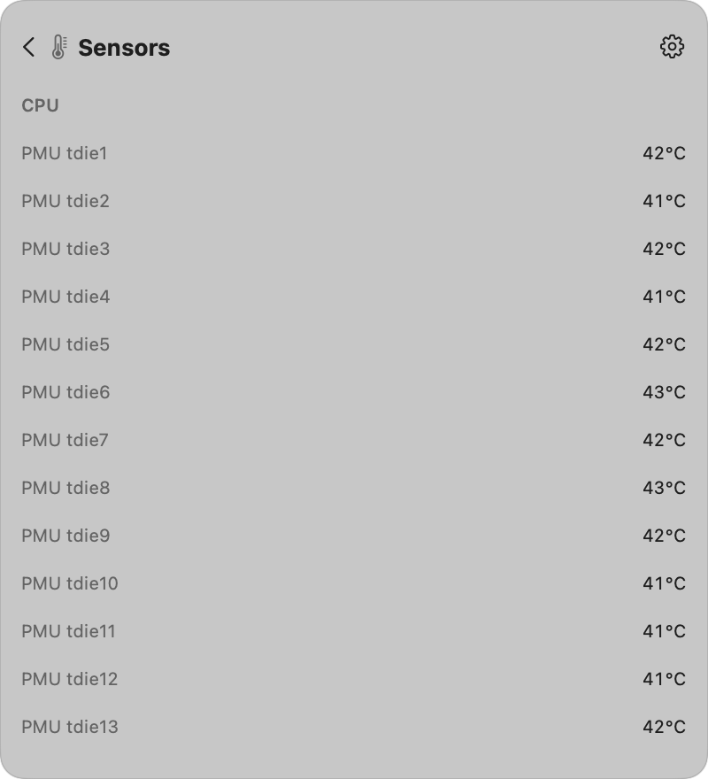
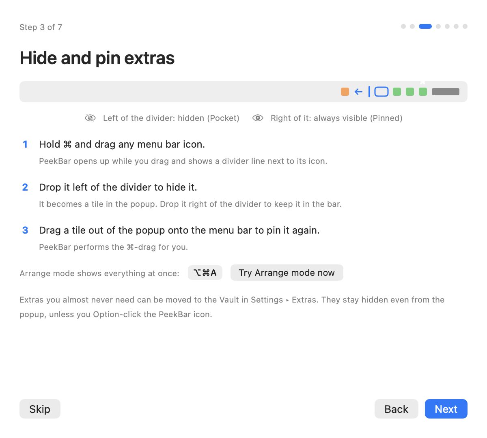
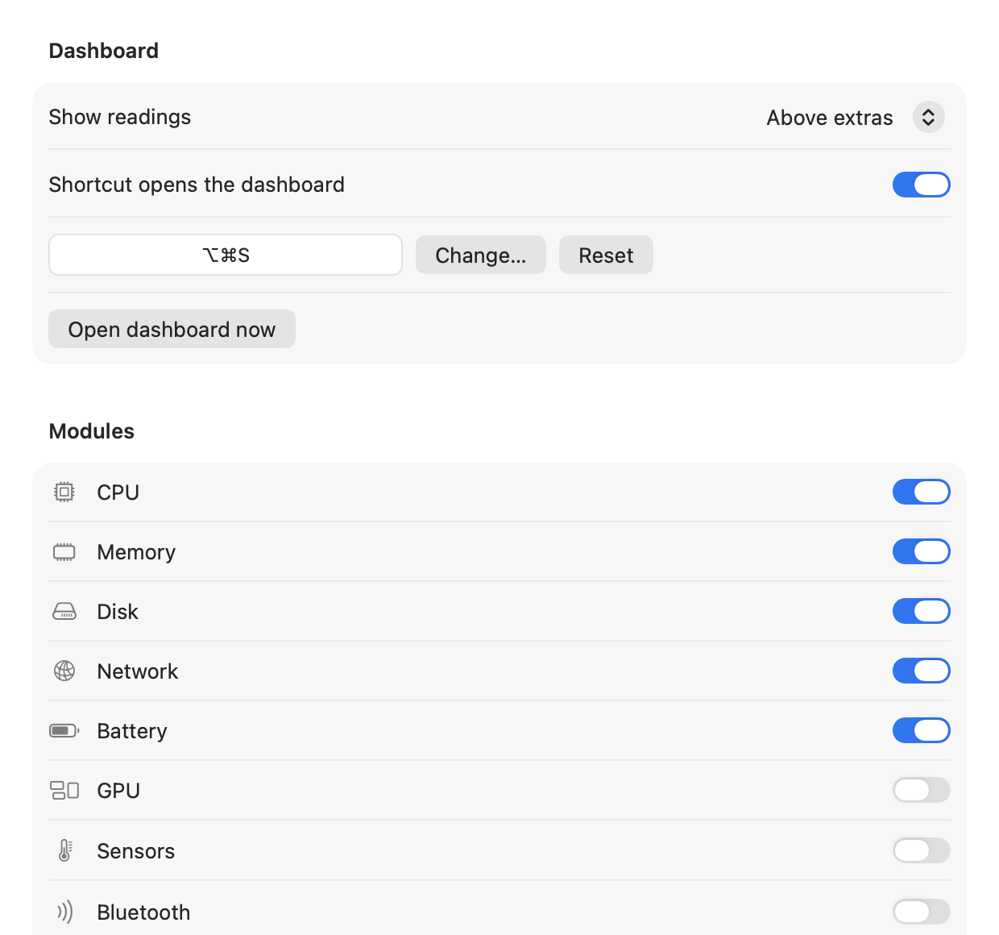
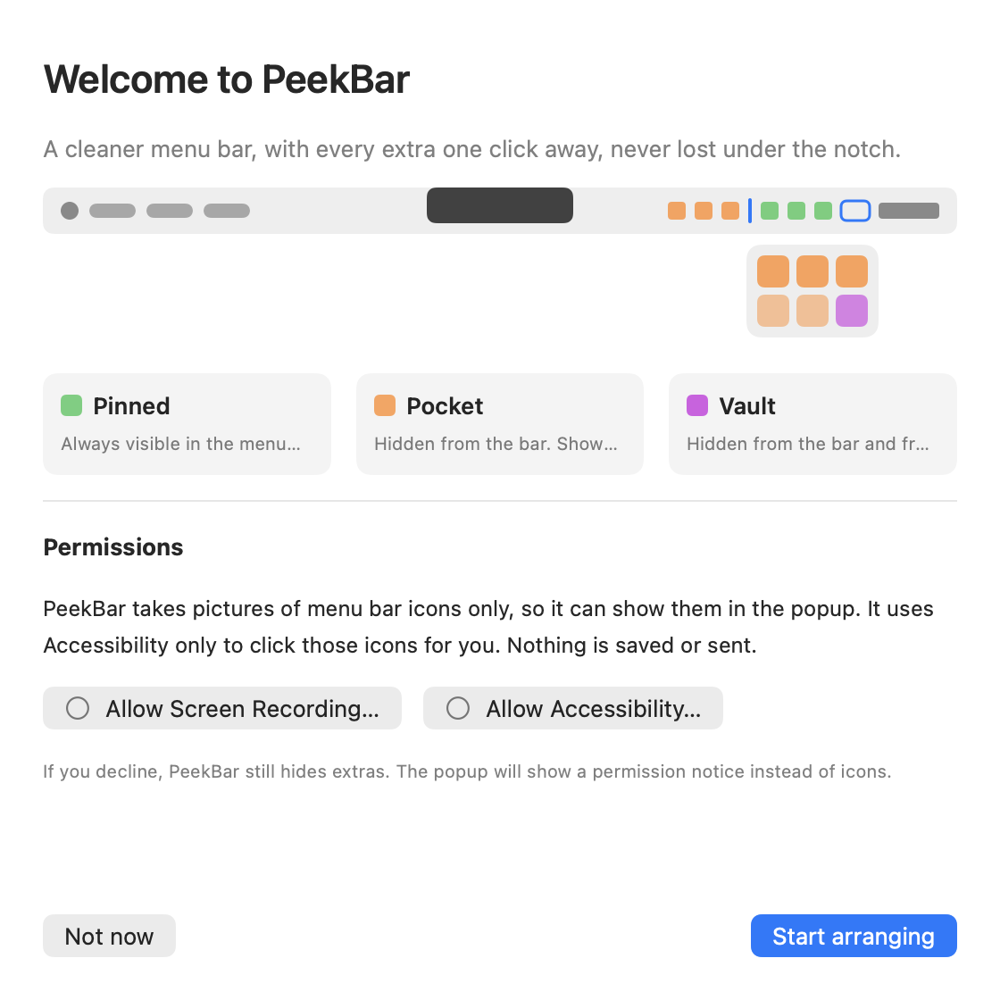

Built for notched MacBooks, useful on every Mac
Most menu bar hiders slide icons back into the bar, which on a notched display means they slide into the camera housing. PeekBar reveals them below the bar instead.
Notch-safe popup
Hidden extras open in a popup 8 pt under the bar, right-aligned to the PeekBar icon and clamped on screen. The bar itself never moves, so nothing is ever unclickable.
Real icons, real menus
Tiles show each extra's actual icon. Click one and its genuine menu opens, driven through Accessibility. Right-click, keyboard navigation and search are all there.
Stats-style monitoring
Nine modules with sparklines, detail pages and top processes. Pin any of them to the bar as a compact widget: line chart, ring, tachometer, bar chart, label and more.
Threshold alerts
Metric, above or below, threshold, sustained duration. Fires as a macOS notification with hysteresis so it doesn't flap, and clicking it opens the module's page.
Private by design
Captures only menu bar icons, uses Accessibility only to click them, and never saves or sends anything. Its single optional network request is a public IP lookup, off by default.
Light on resources
Sampling is demand-driven. A module is read only while a card, widget or alert needs it. With the popup closed and no widgets, nothing samples at all.
Everything lives under the bar






Nine modules, all native APIs
No helper daemon, no kernel extension. Every reading comes from Mach, sysctl, IOKit or the SMC user client, read-only.
Up and running in a minute
Requires macOS 12 Monterey or later. Quit other menu bar hiders first (Hidden Bar, Ice, Bartender); two hiding separators in one bar fight each other.
Download and drag to Applications
Open the DMG from the latest release and drag PeekBar into Applications.
Open it once with right-click ▸ Open
PeekBar isn't notarized with an Apple Developer ID yet, so Gatekeeper refuses a plain double-click the first time. Right-click PeekBar.app, choose Open, then Open again. If macOS says the app is damaged, clear the quarantine flag instead:
xattr -dr com.apple.quarantine /Applications/PeekBar.appGrant two permissions
Screen Recording lets PeekBar draw the real icons on tiles. Accessibility lets it click them for you and identify which app owns each extra. The walkthrough shows live status and Allow buttons. If macOS keeps asking after you've granted one, quit and reopen PeekBar once.
Hide extras with ⌘-drag
Hold ⌘ and drag any status icon. PeekBar expands, a divider appears next to its chevron, and dropping the icon left of the line hides it. Try ⌥⌘A for Arrange mode to see everything at once.
Compatibility
| macOS | Status | Notes |
|---|---|---|
| 26 Tahoe | Supported | Developed and tested here. Extras are identified through Accessibility because Control Center owns every status item window. |
| 15 Sequoia | Supported | Verified on an M1 Pro. ScreenCaptureKit per-window capture. |
| 14 Sonoma | Supported | ScreenCaptureKit per-window capture. |
| 13 Ventura | Supported | Legacy window capture. Launch at login via SMAppService. |
| 12 Monterey | Supported, manual login item | Legacy window capture. Add PeekBar under Users & Groups ▸ Login Items yourself. |
Keyboard shortcuts
| Shortcut | Action |
|---|---|
| ⌥⌘S | Open or close the popup / dashboard |
| ⌥⌘A | Arrange mode, show every extra with the divider HUD |
| ⌥ click | Open the popup including Vault extras |
| ↑↓←→ / Tab | Move between tiles |
| Return / Esc | Activate a tile / close or go back |
How PeekBar fits next to the alternatives
All of these are good tools. PeekBar's difference is combining a below-the-bar reveal with built-in monitoring and alerts, in an open source package.
| PeekBar | Ice | Hidden Bar | Bartender | |
|---|---|---|---|---|
| Reveals hidden extras below the bar | ✓ | ✓ | – | ✓ |
| Real icons and real menus in the reveal | ✓ | ✓ | ✓ | ✓ |
| Built-in CPU / memory / network / sensor monitoring | ✓ | – | – | – |
| Menu bar widgets with charts | ✓ | – | – | – |
| Threshold notifications | ✓ | – | – | – |
| Search and keyboard navigation | ✓ | ✓ | – | ✓ |
| Open source | ✓ MIT | ✓ | ✓ | – |
| Price | Free | Free | Free | Paid |
| Notarized builds | Planned | ✓ | ✓ | ✓ |
Based on each project's public documentation as of September 2026. Spotted a mistake? Open an issue and it will be corrected.
Release notes
Pulled live from GitHub Releases. Every tagged version is built by CI, tested, and attached here as a universal DMG. Full changelog.
Loading release notes from GitHub…
What's shipped and what's next
Priorities move with feedback. Vote on an item or propose one in issues.
brew install --cask peekbar once builds are notarized.Common questions
macOS says PeekBar is damaged or from an unidentified developer. Is it safe?
Yes. The build isn't notarized with an Apple Developer ID yet, so Gatekeeper shows a warning the first time. Right-click the app and choose Open, or clear the quarantine flag with the command in the install steps. The full source is public, and every release is built by GitHub Actions from a tagged commit.
Why does it need Screen Recording and Accessibility?
Screen Recording is the only way to draw the real icon of another app's status item on a tile. Accessibility is how PeekBar presses an extra on your behalf so its genuine menu opens, and how it identifies which app owns each item. Nothing is recorded or stored, and PeekBar works in a reduced mode if you decline.
Does PeekBar send anything over the network?
No, with one opt-in exception. The Network module can show your public IP by querying api.ipify.org every ten minutes. It's off by default. There is no telemetry, no crash reporting and no update phoning home.
Can I use it together with Ice, Hidden Bar or Bartender?
Not at the same time. Each of these inserts a hiding separator into the menu bar, and two separators fight each other. Quit the other tool first, then launch PeekBar.
Some icons won't hide or can't be dragged. Why?
On a notched display, macOS refuses to draw items that don't fit beside the camera housing, even when the bar is fully expanded. Those items can't be ⌘-dragged by any tool. PeekBar reports them as "Not enough room". Hide something else first, and they remain reachable through the popup via Accessibility.
How much does it cost?
Nothing. PeekBar is MIT licensed and free forever. If it saves you time, buying a coffee helps cover the Apple Developer Program fee needed for notarized builds.
How do I report a bug?
Open an issue with your macOS version, chip, whether the display has a notch, and steps to reproduce. Screenshots of the menu bar help a lot.
Read it, build it, change it
PeekBar is a Swift Package with no third-party dependencies. The logic that decides zones, collapse geometry, identity matching, metric math and alert rules lives in a pure PeekBarCore library with unit tests, so the interesting parts can be exercised without a menu bar.
- MIT licensed. Use it, fork it, ship it.
- SwiftUI + AppKit, macOS 12 to 26, universal binary.
- Tests and a release build run on every push and pull request.
- No analytics, no updater phoning home, no accounts.
- Issues and pull requests welcome. See the contributing guide.
Build from source
git clone https://github.com/nabeeltahirdeveloper/peekbar.git
cd peekbar
swift test # unit tests
Scripts/build_app.sh # universal build → dist/PeekBar.app
Scripts/make_dmg.sh # → dist/PeekBar-<version>.dmgNeeds Xcode 15 or later. The build script signs with a Developer ID if you export SIGN_IDENTITY, otherwise with a local self-signed identity or ad hoc. A stable identity keeps the Screen Recording and Accessibility grants across rebuilds.
Privacy and permissions
| Screen Recording | Captures menu bar icons for tiles. Nothing is saved. |
| Accessibility | Presses extras on your behalf and reads their owning app. |
| Notifications | Only if you create an alert rule. |
| Network | Only the optional public IP lookup, off by default. |
Keep PeekBar free and moving
PeekBar is built and maintained in the open by Nabeel Tahir. It will always be free. Coffees go toward the Apple Developer Program membership that makes notarized builds possible, so nobody has to right-click ▸ Open again.
Other ways to help: star the repo, report bugs with your chip and macOS version, or send a pull request.